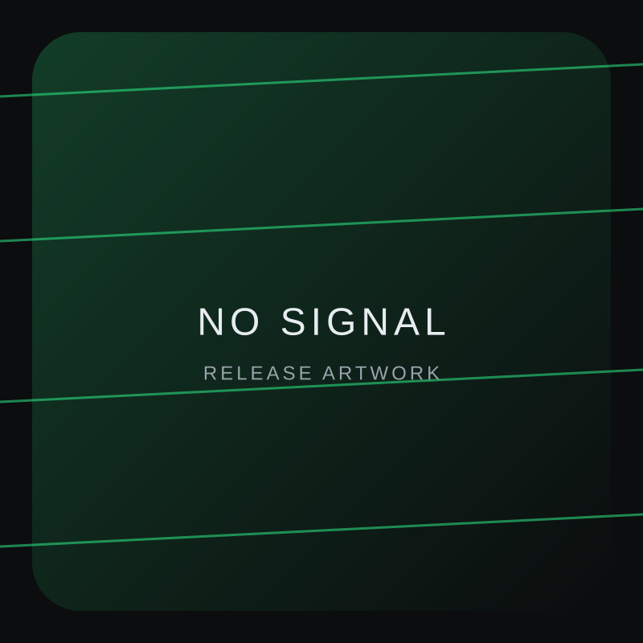

01. Concept
Ogni release nasce da un tema preciso. La fase di concept definisce il tono, le atmosfere e la direzione narrativa.
NO SIGNAL RECORDS
independent label / project studio
Studio
Lo studio di NO SIGNAL RECORDS è il laboratorio in cui il progetto prende forma. Ogni dettaglio tecnico e visivo è progettato per sostenere un suono preciso, senza interferenze.
Il concept dello studio è minimale e funzionale. Nessun elemento superfluo: solo strumenti, isolamento acustico e una disposizione che favorisce focus totale.
L’obiettivo è ridurre le distrazioni e mantenere costante la qualità del processo creativo.
Ogni release nasce da un tema preciso. La fase di concept definisce il tono, le atmosfere e la direzione narrativa.
Sound design granulare, ritmi controllati e layering essenziale. Ogni elemento viene filtrato per coerenza e identità.
La fase di mix è una verifica critica: dinamiche, profondità e presenza vengono calibrate con precisione per ottenere un suono coerente e stabile.
Ogni release è accompagnata da una direzione visiva. L’artwork è parte integrante del messaggio, non un elemento separato.
La dotazione dello studio è essenziale ma mirata: strumenti digitali, hardware selezionato e workflow ottimizzato. Il setup evolve con il progetto, non con le mode.
Synth & Texture
Modulari, wavetable e campionatori digitali.
Monitoring
Sistema nearfield calibrato su ambienti scuri.
Software
Suite DAW + strumenti customizzati in-house.
Archiviazione
Library proprietaria di sample e glitch kit.
Le immagini qui sotto rappresentano il linguaggio visivo del laboratorio. Ogni elemento è parte della narrazione generale di NO SIGNAL RECORDS.




Ogni sessione è documentata, ogni release archiviata. Lo studio segue uno standard interno per mantenere qualità costante e tracciabilità di ogni passaggio.
La produzione segue una timeline flessibile ma disciplinata. Ogni fase è dedicata a un obiettivo specifico per evitare dispersioni.
Al momento no. Lo studio è dedicato esclusivamente ai progetti interni per mantenere coerenza e focus.
Gli ascolti vengono condivisi solo quando una release è pronta e comunicata ufficialmente.
Creare un suono riconoscibile, controllato e coerente con l’identità della label.